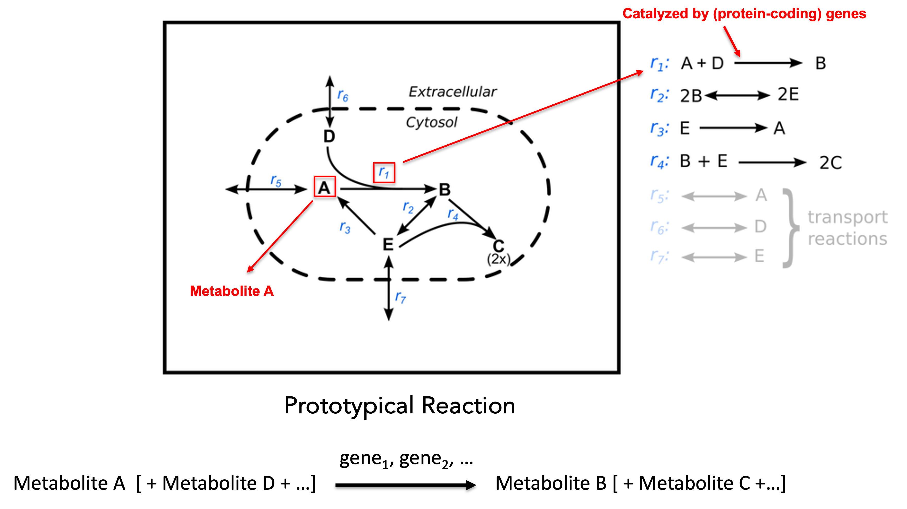
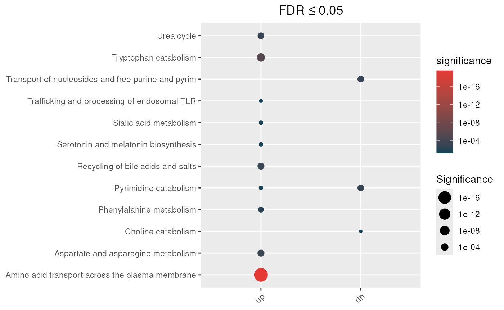
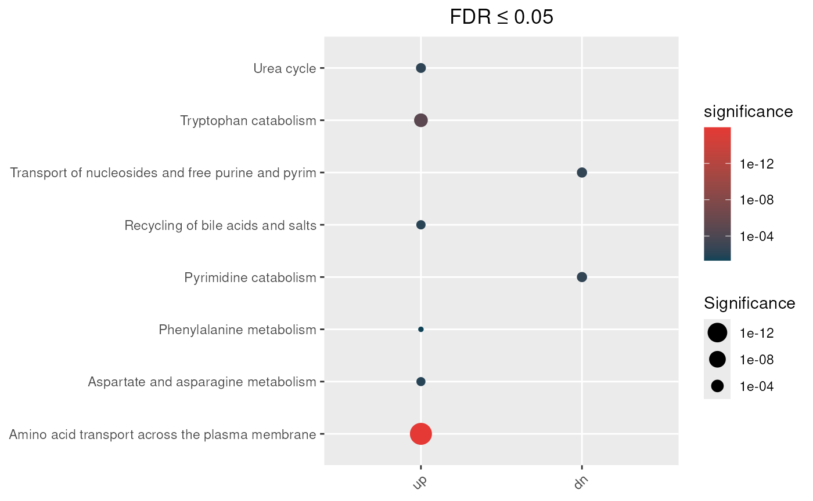

devtools::load_all(".")## ℹ Loading hypeR.GEMGenome-scale metabolic models(GEMs) are curated metabolic models collect all known metabolic information of a biological system(e.g. bacteria, human cell, etc.). There are three essential components in a GEM:
Within a GEM, each metabolite is associated with one or more reactions, in which it participates as either a reactant or a product. Each reaction, in turn, is catalyzed by one or more enzyme-coding genes, with exceptions such as exchange reactions and certain transport reactions that are not catalyzed by enzymes. HypeR-GEM leverages this metabolite–reaction–gene triad to establish a framework for mapping metabolites to genes.
For more details, see here.
A schematic representation of a GEM is shown below:

In the diagram, capital letters denote metabolites, and denotes the reaction. A prototypical metabolic reaction consists of three components:
For example, reaction consumes metabolites and and produces metabolite , and it may be catalyzed by one or more enzyme-coding genes.
To map a metabolite to its associated enzyme-coding genes, hypeR-GEM defines three types of associations:
metabolite-reaction association: A metabolite is associated with a reaction if:
reaction-enzyme(-coding) gene association: A reaction is associated with the enzyme-coding genes that encode enzymes catalyzing that reaction,
metabolite-enzyme(-coding) gene association: A metabolite is associated with all enzyme-coding genes that catalyze the reactions in which the metabolite participates.
The overall workflow is illustrated in the following diagram:
Given an input metabolic signature, a set of metabolites annotated using the RefMet nomenclature, hypeR-GEM identifies all metabolic reactions in which each metabolite participates as either reactant or product. For reversible reactions, metabolites are treated as both reactants and products. For each reaction (excluding exchange reactions and a subset of transport reactions), the associated enzyme-coding genes are then mapped to the metabolites according to two configurable rules: a non-directional mapping that considers all reactions involving the metabolite, and a directional mapping that restricts associations to reactions producing the metabolite based on the stoichiometry encoded in the model.
Enzyme-coding genes differ substantially in their reaction specificity. Non-specific (promiscuous) enzymes can catalyze a broad range of reactions, giving rise to dense gene–reaction–metabolite connections and consequently weaker, less specific associations with a given metabolic signature. To quantify gene-level association specificity and mitigate the influence of such “promiscuous” genes, we compute a gene-specificity score based on the hypergeometric distribution.
For each gene , let denote he total number of metabolites represented in the GEM, the number of metabolites in the metabolic signature, the number of metabolites associated with and the number of those metabolites that overlap with the signature. The significance score is defined as the upper-tail hypergeometric probability of observing at least overlapping metabolites by chance:
Smaller values of a more specific association between gene and the metabolic signature.
To incorporate gene-specificity information into downstream enrichment analyses, each gene is assigned a continuous weight via a sigmoid transformation of its significance score:
This transformation is monotonic and bounded, ensuring that genes with stronger specificity (smaller ) receive larger weights, while genes with weak or nonspecific associations are smoothly down-weighted.
The parameter determines the inflection point of the curve (the half-point, where ), with default value allowing users to control the weight threshold. By default, , corresponding to a half-point at .
The parameter regulates the steepness of the curve. Larger values of produce a sharper transition, whereas smaller values yield a smoother weighting scheme. The default value provides a balanced compromise between sensitivity and smoothness.
For additional flexibility, hypeR-GEM also supports a linear weighting scheme based directly on the significance score:
which assigns weights proportional to the complement of the gene-specificity p-value (adjusted p-value).
The standard hypergeometric test used in over-representation analysis (ORA) evaluates whether a gene set contains more genes associated with a given category (e.g., pathway or ontology term) than expected by chance, implicitly assuming that all genes contribute equally to the enrichment. However, as described in the Gene Specificity section, enzyme-coding genes mapped through genome-scale metabolic models (GEMs) can differ substantially in their association specificity with a given metabolic signature. To incorporate this heterogeneity, hypeR-GEM extends the standard hypergeometric test to a weighted formulation that accounts for gene-specific association strengths.
Formally, the probability of observing at least overlapping genes between a gene set and the input signature under the standard hypergeometric model is given by:
where denotes the background size, is the number of GEM-mapped enzyme-coding genes in the signature, is the size of the gene set, and is the number of overlapping genes.
In the weighted formulation, each gene is assigned a weight reflecting its association specificity. The effective signature size and overlap are then defined as continuous, weight-adjusted counts:
Because the hypergeometric distribution is defined for integer-valued inputs, these quantities are rounded to the nearest integer using standard rounding:
where denotes the floor operator.
Substituting and into the hypergeometric test yields a weighted enrichment score that down-weights highly promiscuous genes with low specificity, thereby reducing noise and limiting spurious enrichments. This weighting strategy improves the robustness, biological relevance, and interpretability of enrichment results derived from GEM-based metabolite-to-gene mappings.
Here, we illustrate the workflow using metabolite signatures associated with coronavirus disease 2019 (COVID-19), derived from human urine samples(See reference). This study profiled the urinary metabolome of 71 patients with COVID-19 and 27 healthy controls. The publicly available COVID-19–associated metabolites were classified into two signatures: up-regulated and down-regulated.
data(COVID_urine)The core function in hypeR-GEM is
signature2gene(), which maps metabolite signatures to
enzyme-coding genes using GEMs. The function takes the following key
arguments:
signature: A list of metabolic signatures. Each
element must be a data frame containing a column whose name matches the
reference_key argument, , which specifies the
RefMet annotation for each metabolite.
directional: Logical argument specifying the
metabolite–reaction mapping rule.
TRUE, metabolites are mapped only to reactions in
which they appear as products (directional mapping).FALSE, metabolites are mapped to reactions in which
they appear as either reactants or products (non-directional
mapping).promiscuous_threshold: Maximum allowable number of
metabolites associated with a gene. Genes exceeding this threshold are
classified as promiscuous and excluded from downstream
analysis.
background: Background used in the gene-specific
hypergeometric test. By default, this is set to the total number of
metabolites represented in the GEM.
reference_key: A character string indicating the
column name in each signature data frame that contains
RefMet metabolite identifiers.
## Undirectional mapping
hypeR_GEM_obj <- hypeR.GEM::signature2gene(signatures = COVID_urine,
directional = FALSE,
promiscuous_threshold = 100,
reference_key = 'refmet_name',
background = NULL)
##Directional mapping
hypeR_GEM_obj_di <- hypeR.GEM::signature2gene(signatures = COVID_urine,
directional = TRUE,
promiscuous_threshold = 100,
reference_key = 'refmet_name',
background = NULL)Here, we illustrate the output of hypeR-GEM using
the results from non-directional mapping. The output of
hypeR.GEM::signature2gene() is a structured list comprising
three major components:
promiscuous_met: A data frame listing metabolites
considered promiscuous, i.e., those associated with an excessively large
number of genes. The filtering threshold is defined by the
promiscuous_threshold parameter in
signature2gene().
mapped_metabolite_signatures: A list in which each
element corresponds to a metabolite signature. Each element is a data
frame that provides the identifier of the metabolite in the GEM
(name), its full name (fullname), the
corresponding RefMet annotation (refmet_name), and the
number of genes associated with that metabolite
(gene_association).
gene_table: The core output of the mapping
procedure. This is a list where each element corresponds to a metabolite
signature and contains a data frame of the mapped enzyme-coding genes.
For each gene, the data frame reports:
associated_reactions)total_association)signature_association)p_value)
head(hypeR_GEM_obj$promiscuous_met)## refmet_name gene_association
## 1 Glutamic acid 109
## 2 S-Adenosylmethionine 152Given that we have two metabolite signatures, namely up-regulated and
down-regulated, the mapped_metabolite_signatures object is
a list of length two. For illustration, we focus here on the
up-regulated signature as an example.
hypeR_GEM_obj$mapped_metabolite_signatures$up %>%
head(.)## name fullname refmet_name gene_association
## 1 MAM00654 2-hydroxyphenylacetate 2-Hydroxyphenylacetic acid 2
## 2 MAM00664 2-methylbutyrylglycine 2-Methylbutyrylglycine 4
## 3 MAM00672 2-oxoglutaramate 2-Keto-glutaramic acid 4
## 4 MAM00775 3-hydroxyanthranilate 3-Hydroxyanthranilic acid 3
## 5 MAM00788 3-hydroxy-L-kynurenine Hydroxykynurenine 7
## 6 MAM00952 4-acetamidobutanoate 4-Acetamidobutanoic acid 6
## formula exact_mass super_class main_class
## 1 C8H8O3 152.0473 Organic acids Phenylpropanoids
## 2 C7H13NO3 159.0895 Organic acids Amino acids and peptides
## 3 C5H7NO4 145.0375 Organic acids Keto acids
## 4 C7H7NO3 153.0426 Benzenoids Benzenes
## 5 C10H12N2O4 224.0797 Organic acids Amino acids and peptides
## 6 C6H11NO3 145.0739 Organic acids Amino acids and peptides
## sub_class
## 1 Cinnamic acids
## 2 Amino acids
## 3 Short-chain keto acids
## 4 Hydroxybenzoic acids
## 5 Amino acids
## 6 Amino acidsSimilarly, the gene_table is also a list object of
length two. For illustration, we focus here on the mapped enzyme-coding
genes derived from the up-regulated metabolite signature as an
example.
hypeR_GEM_obj$gene_tables$up %>%
head(.) ## name symbol associated_reactions total_association
## 1 ENSG00000158104 HPD 2 6
## 2 ENSG00000155380 SLC16A1 80 20
## 3 ENSG00000149124 GLYAT 11 23
## 4 ENSG00000156689 GLYATL2 5 13
## 5 ENSG00000166840 GLYATL1 5 13
## 6 ENSG00000165970 SLC6A5 5 6
## signature_association signature_size background p_value fdr
## 1 1 49 4112 0.0020241802 0.003844373
## 2 1 49 4112 0.0230551953 0.025443797
## 3 3 49 4112 0.0001334704 0.001090009
## 4 2 49 4112 0.0004183142 0.002440166
## 5 2 49 4112 0.0004183142 0.002440166
## 6 1 49 4112 0.0020241802 0.003844373
## one_minus_p_value one_minus_fdr
## 1 0.9979758 0.9961556
## 2 0.9769448 0.9745562
## 3 0.9998665 0.9989100
## 4 0.9995817 0.9975598
## 5 0.9995817 0.9975598
## 6 0.9979758 0.9961556
## associated_metabolites
## 1 2-Hydroxyphenylacetic acid
## 2 2-Hydroxyphenylacetic acid
## 3 2-Methylbutyrylglycine;Isobutyrylglycine;Suberylglycine
## 4 2-Methylbutyrylglycine;Isobutyrylglycine
## 5 2-Methylbutyrylglycine;Isobutyrylglycine
## 6 2-MethylbutyrylglycineHere, we use the REACTOME gene sets as an example to illustrate the downstream enrichment analysis of enzyme-coding genes mapped by hypeR-GEM.
data(reactome)In this example, the background is defined as all enzyme-coding genes
represented in the Human GEM model (see reference).
The enrichment() function performs gene-set enrichment
analysis and accepts the following key arguments:
hypeR_GEM_obj: The object returned by
signature2gene() function.
genesets: A list of gene-sets
genesets_name: A descriptive name for the gene-set
compendium (e.g., “REACTOME”).
method: Enrichment method. “unweighted” applies the
standard Fisher/hypergeometric test, while “weighted” applies the
weighted hypergeometric test.
weighted_by: Used only when
method = "weighted". Specifies the column in
hyper_GEM_obj[["gene_table"]] containing the gene-specific
significance score
.
sigmoid_transformation: Logical. If
TRUE, applies the sigmoid transformation to
,
if FALSE,
is used.
min_metabolite: Additional filtering criterion that
specifies the minimum number of metabolites required for enrichment for
account for metabolite specificity.
Downstream visualization is supported by the
enrichment_plot() and rctbls() functions.
In our example, results obtained using the non-directional mapping rule show that pathways such as Sialic acid metabolism, Trafficking and processing of endosomal TLR, and Choline catabolism are enriched only under the unweighted test, suggesting that these signals are primarily driven by non-specific genes.
max_fdr <- 0.05
## Enrichment analysis from undirectional mapping
enrichment_obj <- hypeR.GEM::enrichment(hypeR_GEM_obj,
genesets = reactome,
genesets_name = "REACTOME",
method='unweighted',
min_metabolite = 2,
background=3068)
p <- hypeR.GEM::enrichment_plot(enrichment_obj,
top=40,
abrv=50,
size_by="significance",
fdr_cutoff= max_fdr,
val='fdr')+
ggplot2::ggtitle(paste("FDR ≤", max_fdr)) +
ggplot2::theme(axis.text.y = element_text(size = 7))
p
max_fdr <- 0.05
## Enrichment analysis from undirectional mapping
enrichment_obj_wt <- hypeR.GEM::enrichment(hypeR_GEM_obj,
genesets = reactome,
genesets_name = "REACTOME",
method='weighted',
weighted_by = 'fdr',
sigmoid_transformation = TRUE,
min_metabolite = 2,
background=3068)
p <- hypeR.GEM::enrichment_plot(enrichment_obj_wt,
top=40,
abrv=50,
size_by="significance",
fdr_cutoff= max_fdr,
val='fdr')+
ggplot2::ggtitle(paste("FDR ≤", max_fdr)) +
ggplot2::theme(axis.text.y = element_text(size = 7))
p
The sankey_plot() function generates a three-layer
Sankey diagrams connecting metabolites, the metabolite sets (MSets), and
the gene sets (GSets) derived from hypeR-GEM. Edge weights between the
metabolite and Msets layers reflect the number of shared metabolites,
while edges between the MSets and GSets layers reflect the overlap
between hypeR-GEM–mapped genes and genes in each GSets. The functions
takes the following key arguments:
hypeR_GEM_obj: The object returned by
signature2gene() function.
msets_list: A list of metabolite-sets. Each element
should be a named list where names are set names and values are
character vectors of metabolite identifiers matching the
key argument.
gsets_list: A list of gene-sets. Each element should
be a named list where names are set names and values are character
vectors of metabolite identifiers matching the key
argument.
key: Column name in
hypeR_GEM_obj[["mapped_metabolite_signatures"]] used as the
metabolite identifier.
As an illustrative example, we applied this function to the
hypeR-GEM_obj constructed from age-associated metabolites
identified in the New England Centenarian Study (NECS) (See reference). A curated
subset of enriched MSets from these metabolites, together with a curated
subset of enriched GSets derived from hypeR-GEM–mapped enzyme-coding
genes, were visualized in an integrative, multi-omics context.
Mapping results can be exported to Excel files using the
hypGEM_to_excel() function:
hypGEM_to_excel(hypeR_GEM_obj, file = "hypeR_GEM_non_directional.xlsx")
hypGEM_to_excel(hypeR_GEM_obj_di, file = "hypeR_GEM_directional.xlsx")